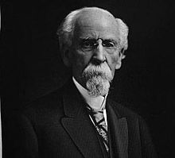

Charles T. Hinde (July 12, 1832 – March 10, 1915) was an American industrialist, tycoon, riverboat captain, businessman, and entrepreneur. He managed many businesses and invested in numerous business ventures over the course of his life. Hinde served in executive leadership positions in the river navigation, shipping, railroad, and hotel businesses. By his late forties, Hinde had already amassed a great fortune from his work in the steamboat and railroad industries.
In the late 1880s Hinde was invited to San Diego by his close friend E. S. Babcock to invest in and run several businesses, including the Hotel del Coronado and the Spreckels Brothers Commercial Company with John D. Spreckels. Hinde vastly increased his personal fortune during his time in southern California, and he helped spur the economy of the region. Towards the end of his life he donated much of his wealth to further various projects in the Californian city of Coronado and its surrounding area, some dedicated to the memory of his daughter Camilla, who died in Evansville, Indiana, at the age of 13.
Hinde was born in Urbana, Ohio, on July 12, 1832. He was one of six children born to Thomas S. Hinde (1785–1846) and Sara Cavileer Hinde (1791–1847). His grandfather was Dr. Thomas Hinde (1737–1828) who had distinguished himself during the American Revolutionary War and during his service to General James Wolfe. During the early years of Hinde's life the family was constantly on the move, because his father was a circuit preacher of the Methodist faith and was speculating in military real estate in the territories purchased from the Native Americans by Willam Henry Harrison. Eventually, Hinde's father purchased a large tract of land in southern Illinois where he founded a town and settled with his family.
Hinde attended elementary and middle school in Mount Carmel, Illinois, a town his father founded in 1815. The Hinde family were large landowners in Mount Carmel and Wabash County, Illinois. A portion of the family land was located on the Wabash River and included Hanging Rock and the Grand Rapids Dam. Hinde attended Indiana Asbury University (now DePauw University) in Greencastle for a year and a half before dropping out following the deaths of his father and mother.Hinde, his brother Edmund C. Hinde, and his sister Belinda Hinde were forced to live with other relatives or fend for themselves. For a short time in the 1850s, Hinde and his younger sister Belinda lived with their older sister, Martha, and her husband, Judge Charles H. Constable, in Mount Carmel and in Marshall, Illinois.As a college dropout, Hinde was initially only able to find work as a grocery clerk in Vincennes and later as a clerk in Mount Carmel. Even though these were low-paying jobs, Hinde was able to support himself because he had inherited large land holdings from his father